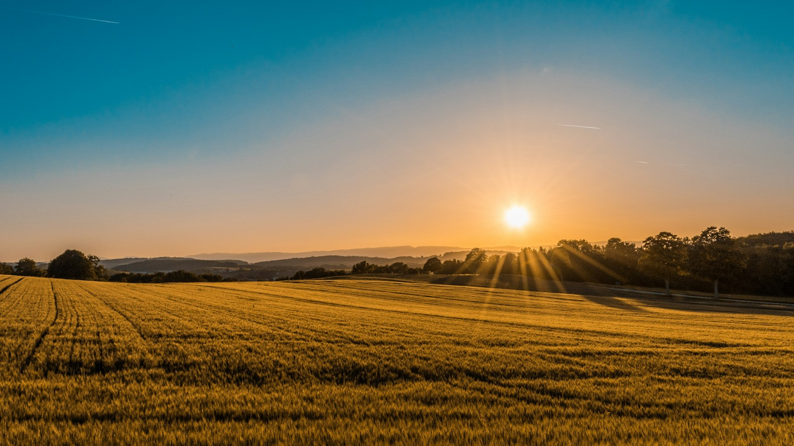
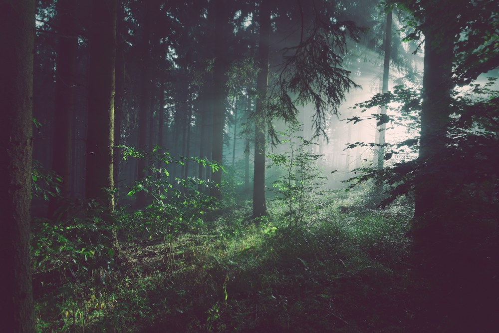
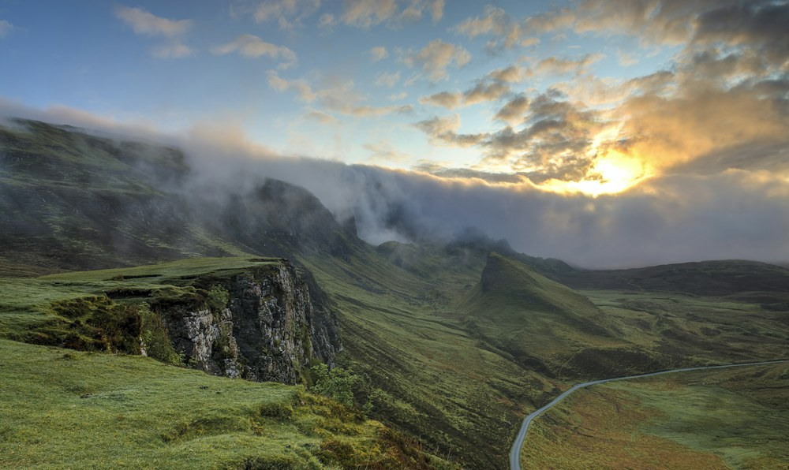
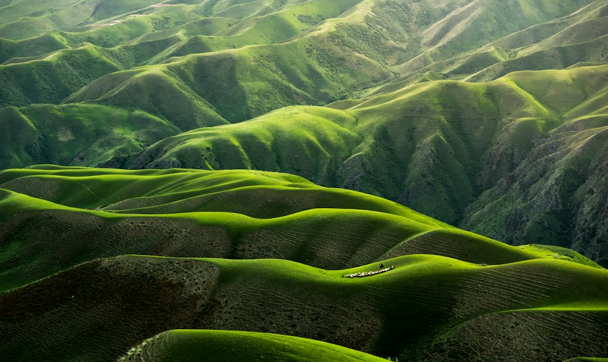

Многостраничный сайт
Общая тема, меню, текстовые разделы и фотографии. Главная страница, журнал и мастерская оформлены в одном стиле. Собственный логотип нарисован с помощью CSS.
Учебный проект / Вёрстка и прототипирование сайтов
Место, где журнал постепенно превращается в учебный проект. Здесь собраны выполненные задания и оставлено пространство для следующих работ по курсу.
Общая тема, меню, текстовые разделы и фотографии. Главная страница, журнал и мастерская оформлены в одном стиле. Собственный логотип нарисован с помощью CSS.
Зелёный трактор на полосатом поле, солнце и облака. Композиция размером 200 × 200 пикселей собрана из простых элементов и оформлена отдельной таблицей стилей.
Раздел появится после получения задания. Будущие лабораторные тоже будут добавлены сюда, чтобы все работы оставались доступны из одного меню.
Первая лабораторная
Темой проекта стал небольшой журнал о природе и загородных прогулках. У него спокойная цветовая палитра: светлый фон, тёмно-зелёный текст и тёплый оранжевый акцент. Крупные заголовки отделяют разделы друг от друга, а свободное пространство помогает спокойно рассматривать фотографии. Такой подход связывает страницы, даже когда у них разное содержание.
На главной странице можно познакомиться с журналом, открыть большую заметку или перейти к фотоальбому. В статье есть несколько разделов, оглавление и изображения внутри текста. Они показывают, как текст обтекает фотографию на широком экране и как элементы выстраиваются друг под другом на телефоне. Из статьи также можно перейти к рисунку трактора.
Верхняя часть каждой страницы содержит название журнала, круглый логотип и основное меню. Внизу повторяются название проекта и полезные ссылки. Между ними находится основное содержание. Эта структура помогает ориентироваться: посетителю не нужно возвращаться на главную, чтобы открыть другой раздел или найти лабораторные работы.
Файлы разделены по назначению. Страницы находятся в папке
pages, фотографии — в images, а таблицы
стилей — в css. Главный документ
index.html расположен в корне. Ссылки используют
относительные пути, поэтому весь сайт можно перенести в другую папку и
открыть заново. Все изображения сохранены вместе с проектом.
Вторая работа продолжает тему журнала. Вместо фотографии на её странице размещена небольшая иллюстрация сельского пейзажа. Рядом показан исходный образец, а ниже объясняется, из каких деталей собран рисунок. Общая шапка, меню и подвал при этом остаются такими же, как на остальных страницах. Поэтому отдельное задание воспринимается как часть одного сайта.



